Areas, Densities, and Frequency Polygons with Fading Gradient
Source:R/geom-area-fade.R, R/geom-density-fade.R, R/geom-freqpoly-fade.R
geom_area_fade.Rdgeom_area_fade() behaves like ggplot2::geom_area() but uses grid::linearGradient()
to create area plots. The gradient is always anchored at y = 0: maximum
transparency there, fading to opaque at the data values. Opacity scales
with the absolute distance from zero, so equal |y| values always receive
the same alpha – full opacity is reached only at the extreme with the largest
absolute value. This works for positive values, negative values, and groups
that cross zero (where a three-stop gradient is used).
When fill is mapped to a variable (e.g. aes(fill = z)), the geom
combines the horizontal colour gradient produced by ggplot2 with the
vertical alpha fade, creating a two-dimensional gradient effect. This
requires a device that supports Porter-Duff compositing
(e.g. ragg::agg_png(), grDevices::svg()). On unsupported devices the
geom falls back to a single-colour vertical fade and emits an informational
message.
geom_density_fade() computes and draws a kernel density estimate –
a smoothed version of the histogram – with the same vertical alpha
gradient as geom_area_fade(). Under the hood this is GeomAreaFade
paired with ggplot2::stat_density(), so all smoothing parameters
(bw, adjust, kernel, bounds, ...) are forwarded to the stat.
geom_freqpoly_fade() draws a frequency polygon (like
ggplot2::geom_freqpoly()) filled with the same linear gradient as
geom_area_fade().
Usage
geom_area_fade(
mapping = NULL,
data = NULL,
stat = "align",
position = "stack",
...,
alpha_fade_to = 0,
alpha_scope = "global",
orientation = NA,
outline.type = "upper",
na.rm = FALSE,
show.legend = NA,
inherit.aes = TRUE
)
geom_density_fade(
mapping = NULL,
data = NULL,
stat = "density",
position = "identity",
...,
bw = "nrd0",
adjust = 1,
kernel = "gaussian",
bounds = c(-Inf, Inf),
alpha_fade_to = 0,
alpha_scope = "global",
orientation = NA,
outline.type = "upper",
na.rm = FALSE,
show.legend = NA,
inherit.aes = TRUE
)
geom_freqpoly_fade(
mapping = NULL,
data = NULL,
stat = "bin",
position = "identity",
...,
binwidth = NULL,
bins = NULL,
alpha_fade_to = 0,
alpha_scope = "global",
orientation = NA,
pad = TRUE,
outline.type = "upper",
na.rm = FALSE,
show.legend = NA,
inherit.aes = TRUE
)Arguments
- mapping
Set of aesthetic mappings created by
aes(). If specified andinherit.aes = TRUE(the default), it is combined with the default mapping at the top level of the plot. You must supplymappingif there is no plot mapping.- data
The data to be displayed in this layer. There are three options:
If
NULL, the default, the data is inherited from the plot data as specified in the call toggplot().A
data.frame, or other object, will override the plot data. All objects will be fortified to produce a data frame. Seefortify()for which variables will be created.A
functionwill be called with a single argument, the plot data. The return value must be adata.frame, and will be used as the layer data. Afunctioncan be created from aformula(e.g.~ head(.x, 10)).- stat
Use to override the default connection between
geom_freqpoly_fade()andstat_bin().- position
A position adjustment to use on the data for this layer. This can be used in various ways, including to prevent overplotting and improving the display. The
positionargument accepts the following:The result of calling a position function, such as
position_jitter(). This method allows for passing extra arguments to the position.A string naming the position adjustment. To give the position as a string, strip the function name of the
position_prefix. For example, to useposition_jitter(), give the position as"jitter".For more information and other ways to specify the position, see the layer position documentation.
- ...
Other arguments passed on to
layer()'sparamsargument. These arguments broadly fall into one of 4 categories below. Notably, further arguments to thepositionargument, or aesthetics that are required can not be passed through.... Unknown arguments that are not part of the 4 categories below are ignored.Static aesthetics that are not mapped to a scale, but are at a fixed value and apply to the layer as a whole. For example,
colour = "red"orlinewidth = 3. The geom's documentation has an Aesthetics section that lists the available options. The 'required' aesthetics cannot be passed on to theparams. Please note that while passing unmapped aesthetics as vectors is technically possible, the order and required length is not guaranteed to be parallel to the input data.When constructing a layer using a
stat_*()function, the...argument can be used to pass on parameters to thegeompart of the layer. An example of this isstat_density(geom = "area", outline.type = "both"). The geom's documentation lists which parameters it can accept.Inversely, when constructing a layer using a
geom_*()function, the...argument can be used to pass on parameters to thestatpart of the layer. An example of this isgeom_area(stat = "density", adjust = 0.5). The stat's documentation lists which parameters it can accept.The
key_glyphargument oflayer()may also be passed on through.... This can be one of the functions described as key glyphs, to change the display of the layer in the legend.
- alpha_fade_to
A single finite number between 0 and 1. The alpha value at
y = 0(the baseline). Defaults to0(fully transparent).- alpha_scope
How to scale alpha across groups.
"global"(default) computes the maximum absolute y value across all groups in the panel so that equal|y|always maps to equal alpha."group"computes the maximum per group, giving each group the full alpha range independently – useful withposition = "identity"when groups have very different amplitudes.- orientation
The orientation of the layer. The default (
NA) automatically determines the orientation from the aesthetic mapping. In the rare event that this fails it can be given explicitly by settingorientationto either"x"or"y". See the Orientation section for more detail.- outline.type
Which edges of the area to draw an outline on. One of
"upper"(default),"lower","both"("upper"and"lower"),"full"(closed polygon outline), or"none". When nocolouris specified explicitly the outline inherits thefillcolour.- na.rm
If
FALSE, the default, missing values are removed with a warning. IfTRUE, missing values are silently removed.- show.legend
logical. Should this layer be included in the legends?
NA, the default, includes if any aesthetics are mapped.FALSEnever includes, andTRUEalways includes. It can also be a named logical vector to finely select the aesthetics to display. To include legend keys for all levels, even when no data exists, useTRUE. IfNA, all levels are shown in legend, but unobserved levels are omitted.- inherit.aes
If
FALSE, overrides the default aesthetics, rather than combining with them. This is most useful for helper functions that define both data and aesthetics and shouldn't inherit behaviour from the default plot specification, e.g.annotation_borders().- bw
The smoothing bandwidth to be used. If numeric, the standard deviation of the smoothing kernel. If character, a rule to choose the bandwidth, as listed in
stats::bw.nrd().- adjust
A multiplicate bandwidth adjustment. This makes it focused on giving the kernel bandwidth more or less smoothing.
- kernel
Kernel. See
stats::density()for more details.- bounds
Known lower and upper bounds for the variable. Default is
c(-Inf, Inf).- binwidth
Width of each bin in data units. When supplied, takes precedence over
bins. Forwarded toggplot2::stat_bin().- bins
Number of bins. Overridden by
binwidth. Defaults to 30. Forwarded toggplot2::stat_bin().- pad
If
TRUE, adds empty bins at either end of x. This ensures frequency polygons touch 0. Defaults toFALSE.
Value
A ggplot2::layer() object that can be added to a ggplot2::ggplot().
Coordinate systems
geom_area_fade(), geom_density_fade(), and geom_freqpoly_fade()
only support linear gradients. When used with ggplot2::coord_polar() or
ggplot2::coord_radial(), they fall back to standard area rendering
(equivalent to ggplot2::geom_area()), which means no gradient fill is
added. A warning is emitted in this case.
alpha_scope = "global" under faceting
alpha_scope = "global" ties opacity to absolute height across the whole
layer, so two ridges / areas / bars of equal height render at equal
alpha regardless of which panel they're in. This is meaningful only when
panels share a common y scale. Under
facet_wrap(scales = "free_y") (or facet_grid(rows = ..., scales = "free"))
each panel rescales y independently, so the visual height of a shape no
longer reflects its data height; the alpha encoding then conflicts with
what the eye reads from the panel size. For comparable alpha across
free-y panels you have two options: stick to the default scales = "fixed",
or accept that under free scales alpha_scope = "group" is the more
honest choice (each shape independently uses its own alpha range).
Legend key under coord_flip
The legend key glyph always shows the canonical (data-axis) fade
direction – vertical for the default orientation, horizontal under
orientation = "y". Under ggplot2::coord_flip() the rendered geom
rotates correctly but the legend key does not: ggplot2's legend
builder is coord-independent by design (draw_key has no access to
the coord). For a legend key that matches a horizontal layout, prefer
aes(y = ...) with auto-detected orientation = "y" over
aes(x = ...) + coord_flip().
Orientation
This geom treats each axis differently and, thus, can thus have two orientations. Often the orientation is easy to deduce from a combination of the given mappings and the types of positional scales in use. Thus, ggplot2 will by default try to guess which orientation the layer should have. Under rare circumstances, the orientation is ambiguous and guessing may fail. In that case the orientation can be specified directly using the orientation parameter, which can be either "x" or "y". The value gives the axis that the geom should run along, "x" being the default orientation you would expect for the geom.
References
Murrell, P. (2021). "Luminance Masks in R Graphics." Technical Report 2021-04, Department of Statistics, The University of Auckland. Version 1. https://www.stat.auckland.ac.nz/~paul/Reports/GraphicsEngine/masks/masks.html
Murrell, P. (2022). "Vectorised Pattern Fills in R Graphics." Technical Report 2022-01, Department of Statistics, The University of Auckland. Version 1. https://www.stat.auckland.ac.nz/~paul/Reports/GraphicsEngine/vecpat/vecpat.html
Murrell, P., Pedersen, T. L., and Skintzos, P. (2023). "Porter-Duff Compositing Operators in R Graphics." Department of Statistics, The University of Auckland. Version 1. https://www.stat.auckland.ac.nz/~paul/Reports/GraphicsEngine/compositing/compositing.html
Murrell, P. (2023). "Groups, Compositing Operators, and Affine Transformations in R Graphics." Technical Report 2021-02, Department of Statistics, The University of Auckland. Version 3. https://www.stat.auckland.ac.nz/~paul/Reports/GraphicsEngine/groups/groups.html
Aesthetics
geom_area_fade() understands the following aesthetics. Required aesthetics are displayed in bold and defaults are displayed for optional aesthetics:
| • | x | |
| • | y | |
| • | alpha | → NA |
| • | colour | → via theme() |
| • | fill | → via theme() |
| • | group | → inferred |
| • | linetype | → via theme() |
| • | linewidth | → via theme() |
Learn more about setting these aesthetics in vignette("ggplot2-specs").
Examples
library(ggplot2)
df1 <- data.frame(
g = c("a", "a", "a", "b", "b", "b"),
x = c(1, 3, 5, 2, 4, 6),
y = c(2, 5, 1, 3, 6, 7)
)
a <- ggplot(df1, aes(x, y, fill = g)) +
theme_minimal()
# Default behaviour: opaque at data line, transparent at y = 0
# the outline colour remains unaffected
a + geom_area_fade()
 # Change overall opacity
a + geom_area_fade(alpha = .25)
# Change overall opacity
a + geom_area_fade(alpha = .25)
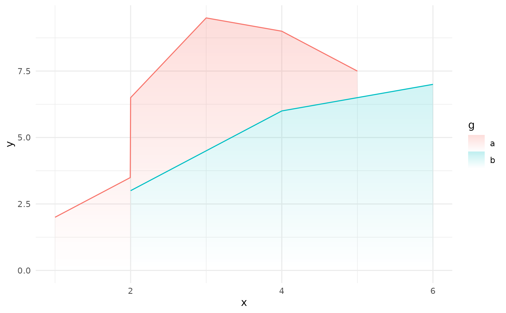
# Keep some opacity at the baseline
a + geom_area_fade(alpha_fade_to = .25)
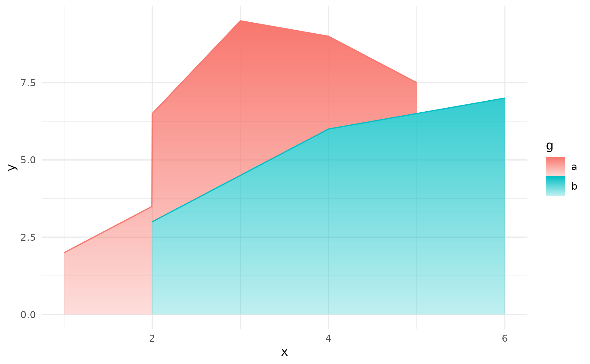
# Suppress the default upper outline
a + geom_area_fade(outline.type = "none")
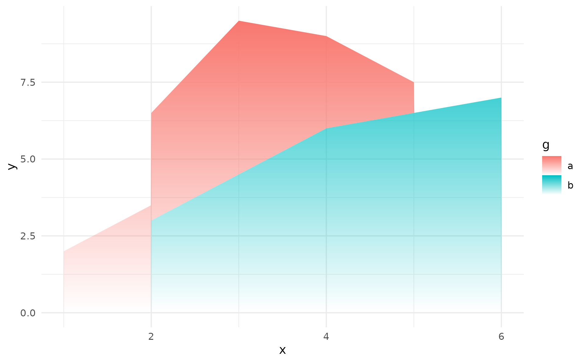
# Closed outline (all four edges)
a + geom_area_fade(outline.type = "full")
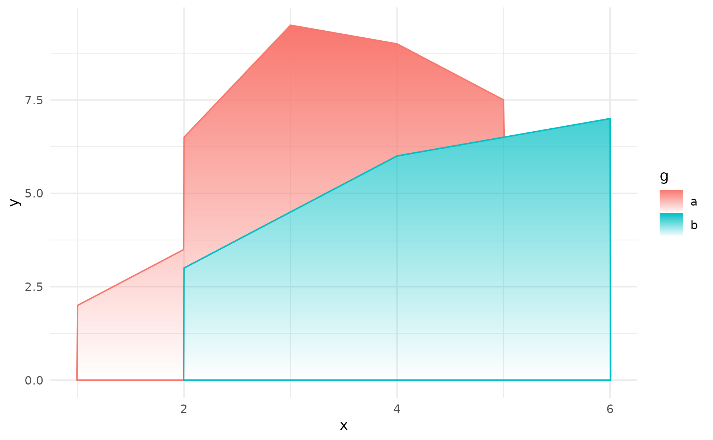
# Horizontal orientation
a + geom_area_fade(aes(y, x), orientation = "y")
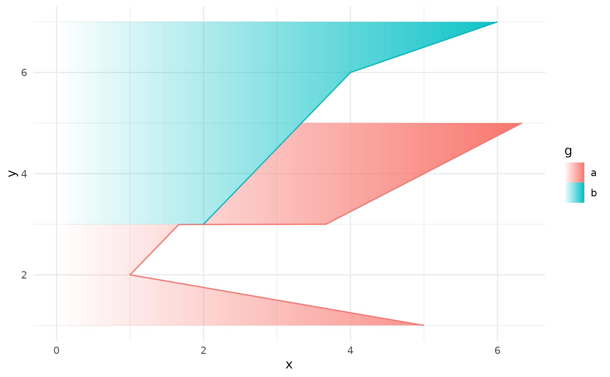
# Disable stat alignment (useful when x values are already aligned)
a + geom_area_fade(stat = "identity")
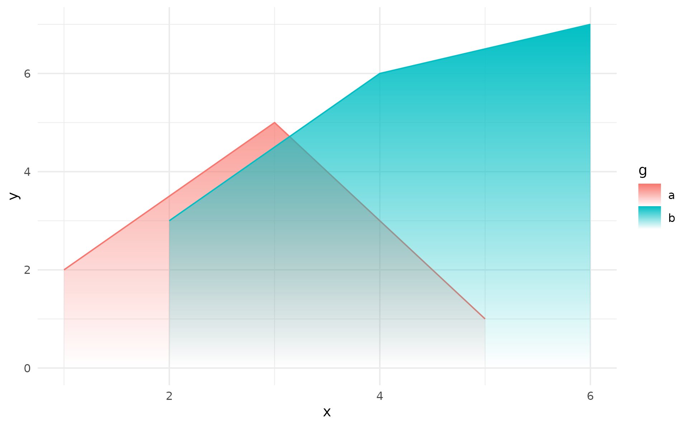
# Draw upper and lower outlines (no left/right edges)
a + geom_area_fade(outline.type = "both", stat = "identity")
 # Use the "alpha_scope" argument to scale the alpha
# value of the gradients separately for each group
df2 <- data.frame(
g = c("a", "a", "a", "b", "b", "b"),
x = c(1, 3, 5, 2, 4, 6),
y = c(1, 2, 1, 9, 10, 8)
)
b <- ggplot(df2, aes(x, y, fill = g)) +
theme_minimal()
# With alpha_scope = "group", each group uses the alpha range independently
b + geom_area_fade(
alpha_scope = "group",
position = "identity"
)
# Use the "alpha_scope" argument to scale the alpha
# value of the gradients separately for each group
df2 <- data.frame(
g = c("a", "a", "a", "b", "b", "b"),
x = c(1, 3, 5, 2, 4, 6),
y = c(1, 2, 1, 9, 10, 8)
)
b <- ggplot(df2, aes(x, y, fill = g)) +
theme_minimal()
# With alpha_scope = "group", each group uses the alpha range independently
b + geom_area_fade(
alpha_scope = "group",
position = "identity"
)
 # Compare with the default where small groups appear washed out
# next to dominant groups, especially when position = "identity"
b + geom_area_fade(
alpha_scope = "global", # default
position = "identity"
)
# Compare with the default where small groups appear washed out
# next to dominant groups, especially when position = "identity"
b + geom_area_fade(
alpha_scope = "global", # default
position = "identity"
)
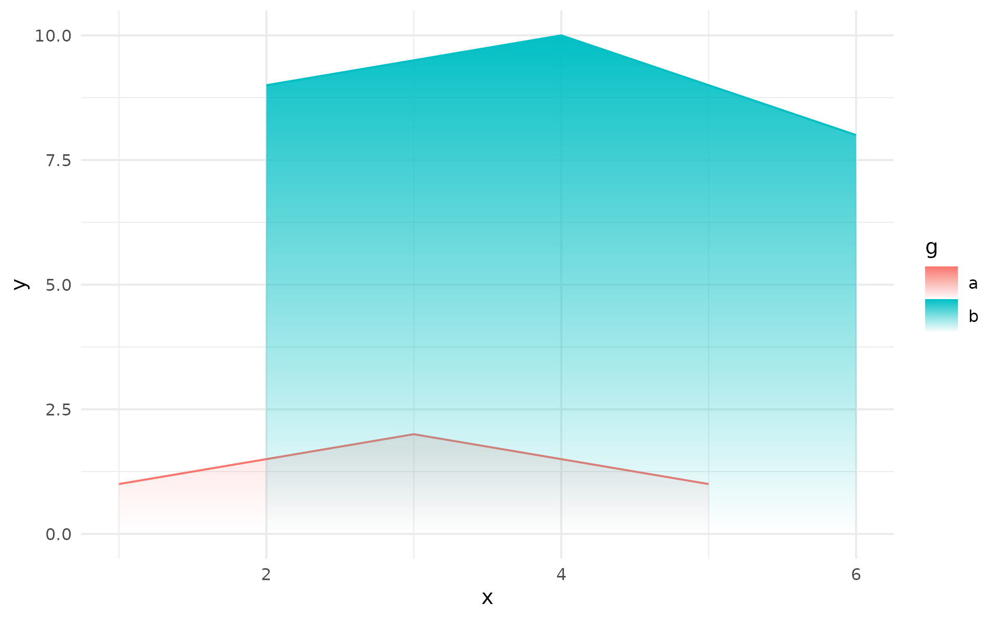
# Negative values are supported too:
# the gradient fades towards y = 0 from both sides
d <- ggplot(df2, aes(x, y - mean(y))) +
theme_minimal()
d + geom_area_fade()
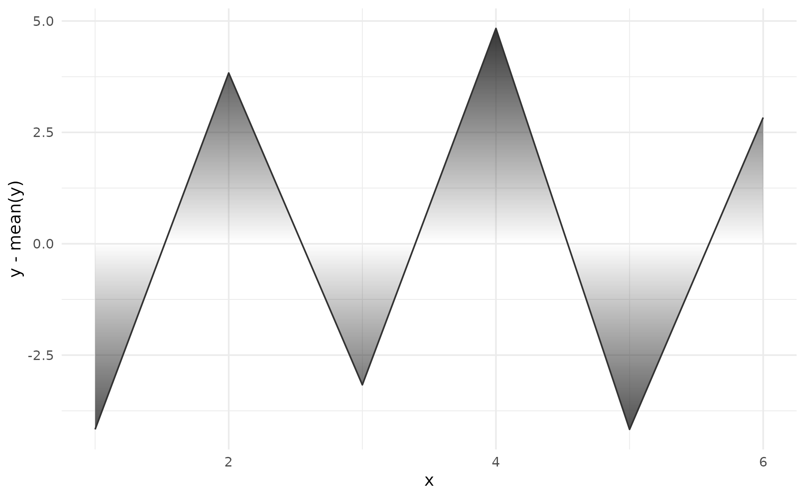
# Overwrite both fill and colour
d + geom_area_fade(
fill = "#0833F5",
colour = "#d77e7b",
outline.type = "lower"
)
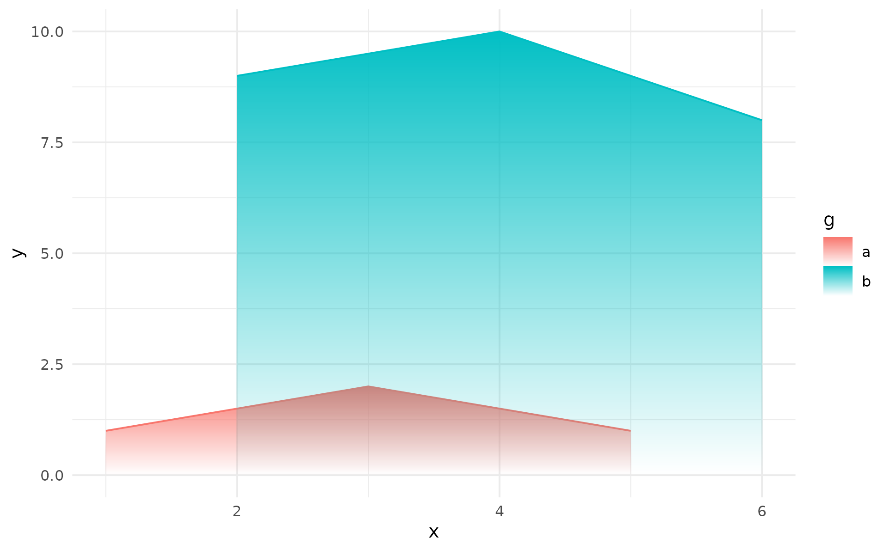
# A 2D-gradient is produced when fill is mapped to a variable
# this may not work on all graphic devices, see vignette for details
d + geom_area_fade(
aes(fill = y),
colour = "#333333",
outline.type = "both"
)
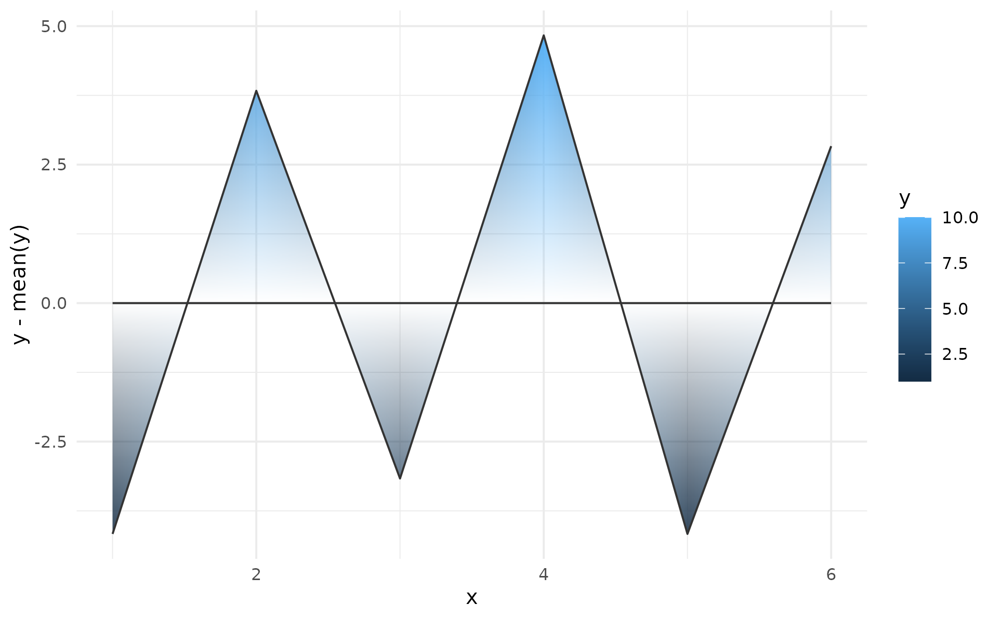
# Basic density curve: opaque at the peak, fully transparent at the baseline.
ggplot(diamonds, aes(carat)) +
geom_density_fade()
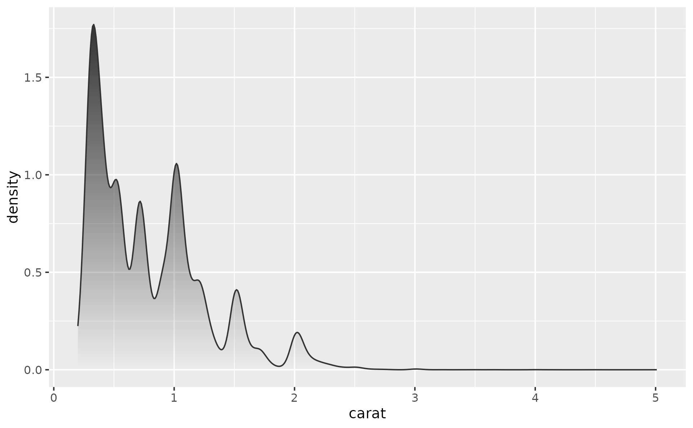
# Map the values to y to flip the orientation
ggplot(diamonds, aes(y = carat)) +
geom_density_fade()
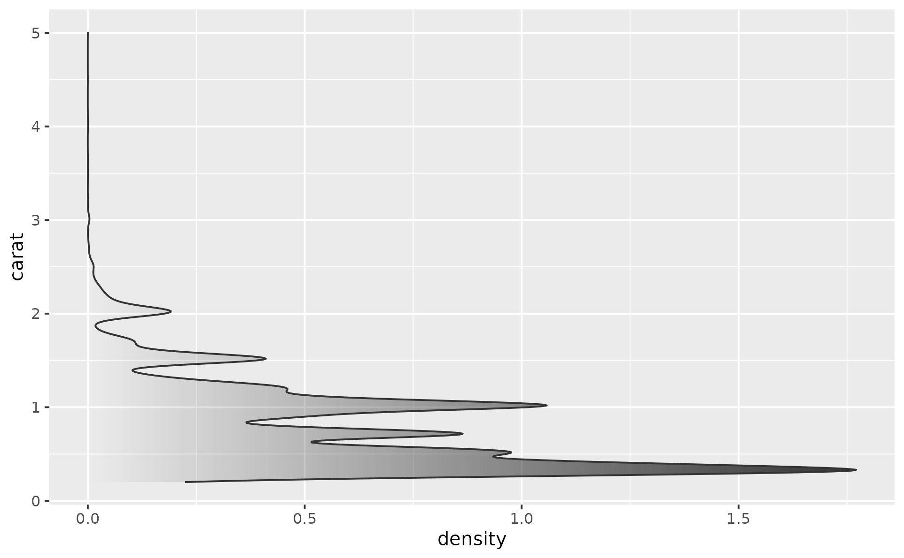
# `alpha_fade_to` controls the alpha at the baseline.
# The default `0` is fully transparent; raise it to keep some
# opacity at the floor.
ggplot(diamonds, aes(carat)) +
geom_density_fade(alpha_fade_to = 0.2)
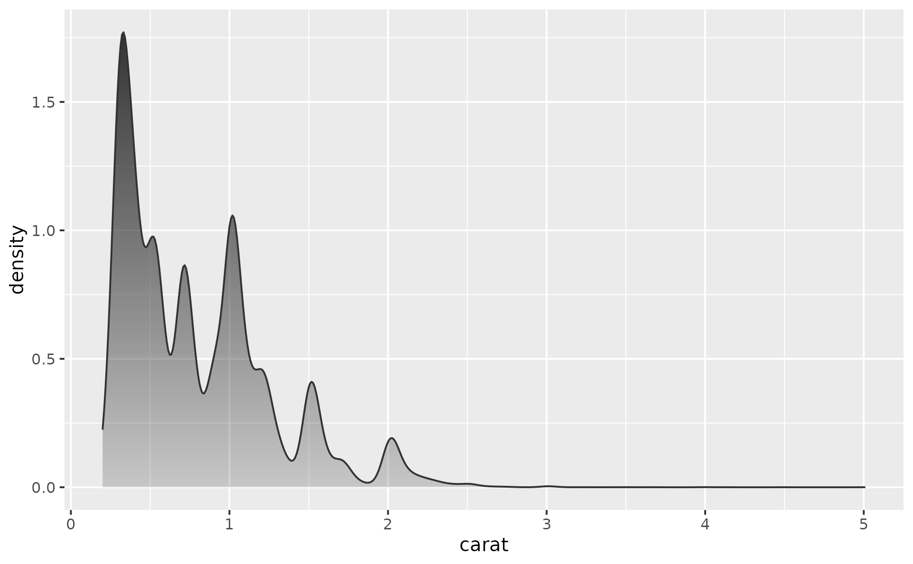
# Multiple groups via `fill`. With the default `alpha_scope = "global"`
# the tallest peak in the layer reaches full opacity; shorter peaks fade
# in proportion. `xlim()` trims the long tails for clarity.
ggplot(diamonds, aes(depth, fill = cut)) +
geom_density_fade() +
xlim(55, 70)
#> Warning: Removed 45 rows containing non-finite outside the scale range
#> (`stat_density()`).
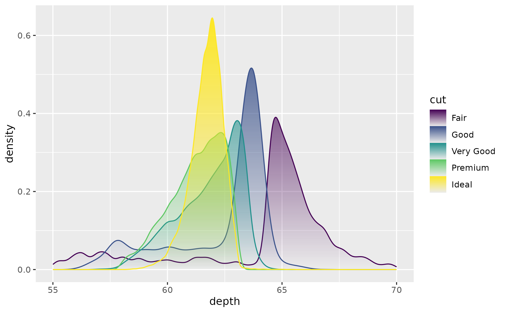
# Switch to `alpha_scope = "group"` so every
# area hits full opacity independently
ggplot(diamonds, aes(depth, fill = cut)) +
geom_density_fade(alpha_scope = "group") +
xlim(55, 70)
#> Warning: Removed 45 rows containing non-finite outside the scale range
#> (`stat_density()`).
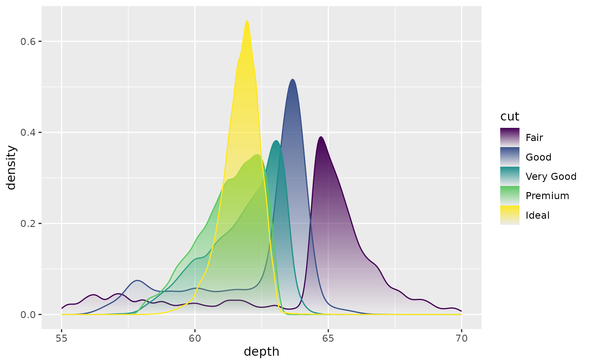
# You can use position = "fill" to produce a conditional density estimate
ggplot(diamonds, aes(carat, after_stat(count), fill = cut)) +
geom_density_fade(position = "fill")
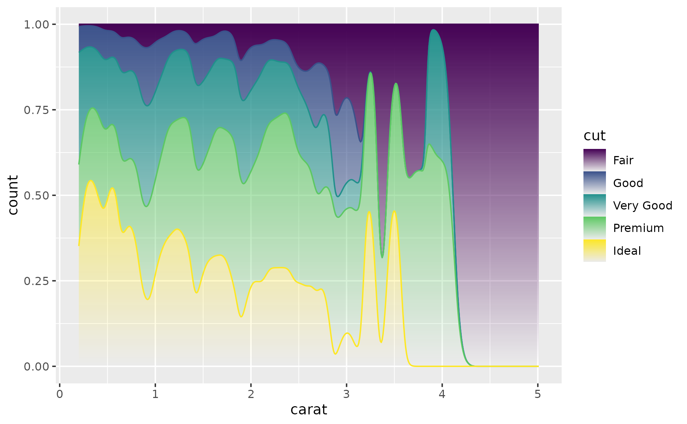
# Basic frequency polygon with fading gradient
ggplot(faithful, aes(waiting)) +
geom_freqpoly_fade(
colour = "#3b528b",
bins = 20
) +
theme_minimal()
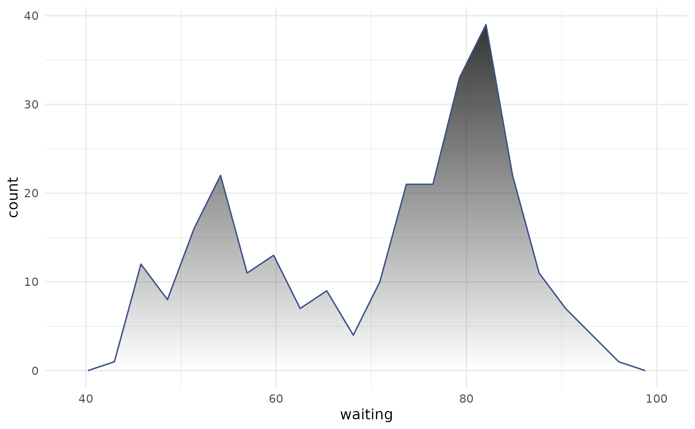
# Rather than stacking histograms, compare frequency polygons
ggplot(iris, aes(Sepal.Length, fill = Species, colour = Species)) +
geom_freqpoly_fade(
alpha = 0.8,
position = "identity",
bins = 20
) +
scale_fill_viridis_d() +
scale_colour_viridis_d() +
theme_minimal()
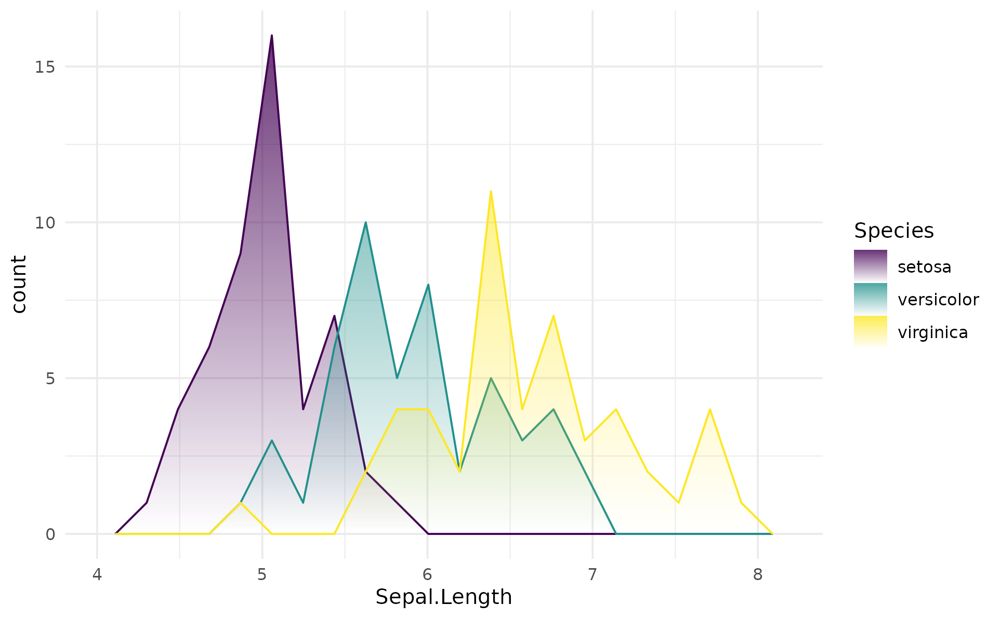